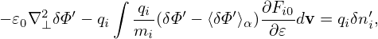

![[ ∂ ]
∂t + (v∥e∥ + VD + δVD )⋅∇X δhs
[ ]
+𝜖g q-∂F0 ∂- +(v∥e∥ + VD + δVD ) ⋅∇X ⟨δΦ⟩α
m ∂𜀠∂[t ]
q- -∂ ∂F0-
+𝜖gm ⟨δΦ⟩α ∂t + (v∥e∥ + VD + δVD )⋅∇X ∂𝜀
= − δVD ⋅∇XF0
q ∂F0
−m-[(v∥e∥ +VD + δVD )⋅∇X (⟨v ⋅δA − δΦ⟩α)]∂𝜀-. (308)](nonlinear_gyrokinetic_equation347x.png)
The perturbed distribution function is decomposed as given by Eq. (174), i.e.,
|
| (306) |
where the term in blue is the so-called adiabatic response, which depends on the gyro-angle in guiding-center coordinates. Recall that the red term ⟨δΦ⟩α, which is independent of the gyro-angle, is introduced in order to eliminate the time derivative ∂⟨δΦ⟩α∕∂t term on the right-hand side of the original Frieman-Chen gyrokinetic equation.
The so-called generalized split-weight scheme corresponds to going back to the original Frieman-Chen gyrokinetic equation by introducing another ⟨δΦ⟩α term with a free small parameter 𝜖g. Speciï¬cally, δh in the above is split as
|
| (307) |
(If 𝜀g = 1, then the two ⟨δΦ⟩α terms in Eq. (306) and (307) cancel each other.) Substituting this expression into Eq. (), we obtain the following equation for δhs:
Noting that ∂F0∕∂t = 0, e∥⋅∇F0 = 0, ∇F0 ∼ O(λ1)F0, we ï¬nd that the third line of the above equation is of order O(λ3) and thus can be dropped. Moving the second line to the right-hand side, the above equation is written as
For the special case of 𝜖g = 1 (the default and most used case in GEM code, Yang Chen said 𝜖g < 1 cases are sometimes not accurate, so he gave up using it since 2009), equation (309) can be simpliï¬ed as:
where two VG ⋅⟨δΦ⟩α terms cancel each other. Because the v∥E∥ term is one of the factors that make kinetic electron simulations difficult, eliminating VG ⋅⟨δΦ⟩α term may be beneï¬cial for obtaining stable algorithms.For 𝜖g = 1, δF is written as
Equation (310) actually goes back to the original Frieman-Chen equation. The only difference is
that ⟨v ⋅δA⟩α is further split from the perturbed distribution function. Considering this, equation
(310) can also be obtained from the original Frieman-Chen equation (136) by writing δG0
as
is further split from the perturbed distribution function. Considering this, equation
(310) can also be obtained from the original Frieman-Chen equation (136) by writing δG0
as
 | (312) |
In this case, δF is written as
|
| (313) |
Substituting expression (312) into equation (136), we obtain the following equation for δhs:
Noting that ∂F0∕∂t = 0, e∥⋅∇F0 = 0, ∇F0 ∼ O(λ1)F0, we ï¬nd that the third line of the above equation is of order O(λ3) and thus can be dropped. Moving the second line to the right-hand side, the above equation is written as which agrees with Eq. (310).In GEM, the split weight method is used only for electrons, and ∂⟨δΦ⟩α∕∂t is approximated by ∂δΦ∕∂t, which is obtained from the vorticity equation (rather than from time-difference scheme).
Â
When using the split weight scheme, a ∂δϕ∕∂t terms appear in the right-hand-side of the weight evolution equation. GEM makes use of the vorticity equation (time derivative of the Poissson equation) to evaluate ∂δϕ∕∂t.
![[ ]
∂-+ (v e + V + δV )⋅∇ δh
∂t ∥ ∥ D D X s
= − δVD ⋅∇XF0
q { [ ∂⟨δΦ ⟩α ]} ∂F0
−m- (v∥e∥ + VD + δVD )⋅∇X [⟨v ⋅δA ⟩α − ⟨δΦ ⟩α]+ 𝜖g --∂t--+ VG ⋅∇X ⟨δΦ ⟩α (∂3𝜀09.)](nonlinear_gyrokinetic_equation348x.png)
![[ ]
∂-+ (v∥e∥ + VD + δVD ) ⋅∇X δhs
∂t [ ]
q-∂F0- ∂-
+ m ∂𜀠∂t + (v∥e∥ + VD + δVD )⋅∇X ⟨v ⋅δA⟩α
q [ ∂ ] ∂F0
+ m⟨v ⋅δA⟩α ∂t + (v∥e∥ + VD + δVD )⋅∇X ∂-𝜀-
= − δVD ⋅∇XF0 −-q ∂⟨δΦ-−-v-⋅δA⟩α∂F0-, (314)
m ∂t ∂𝜀](nonlinear_gyrokinetic_equation355x.png)